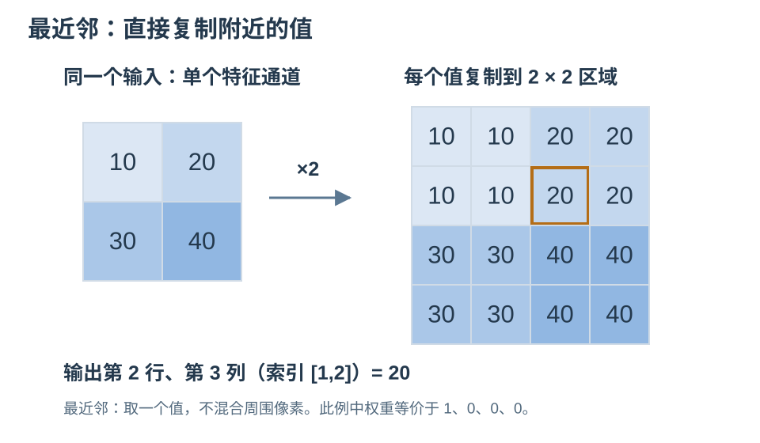
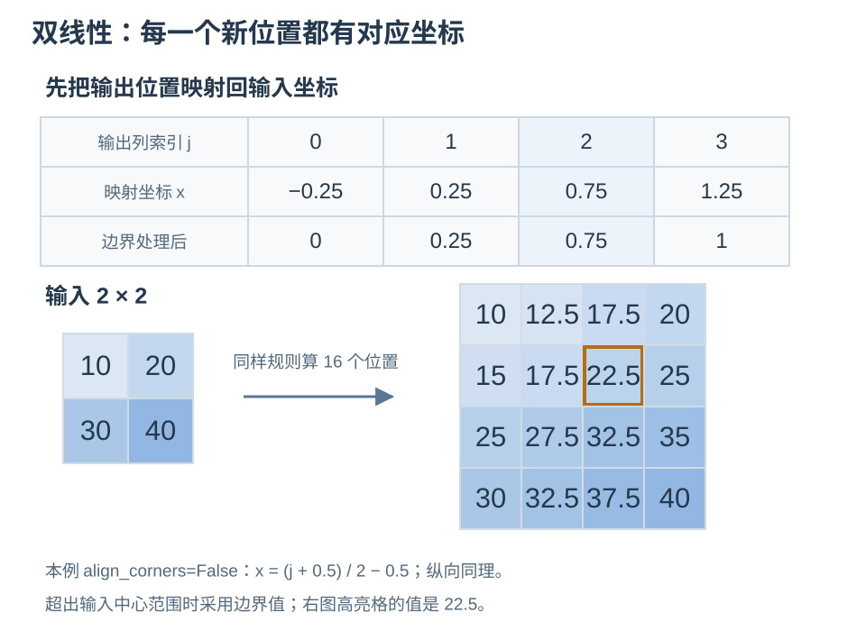
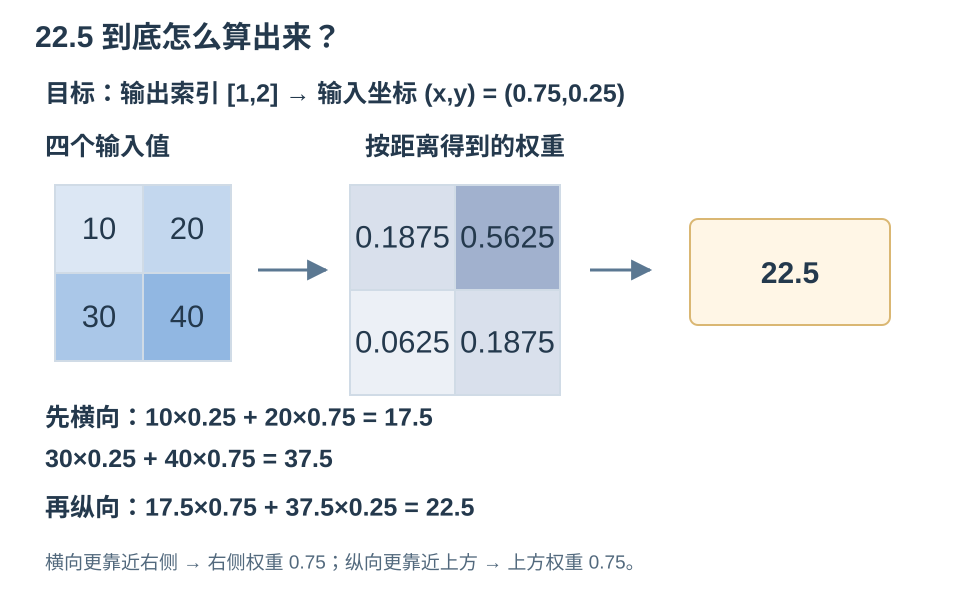
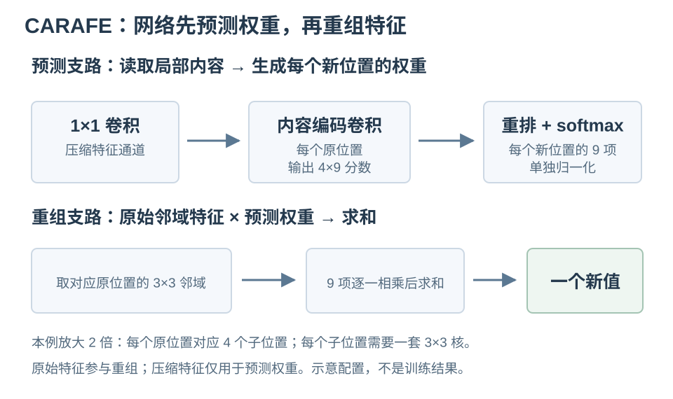
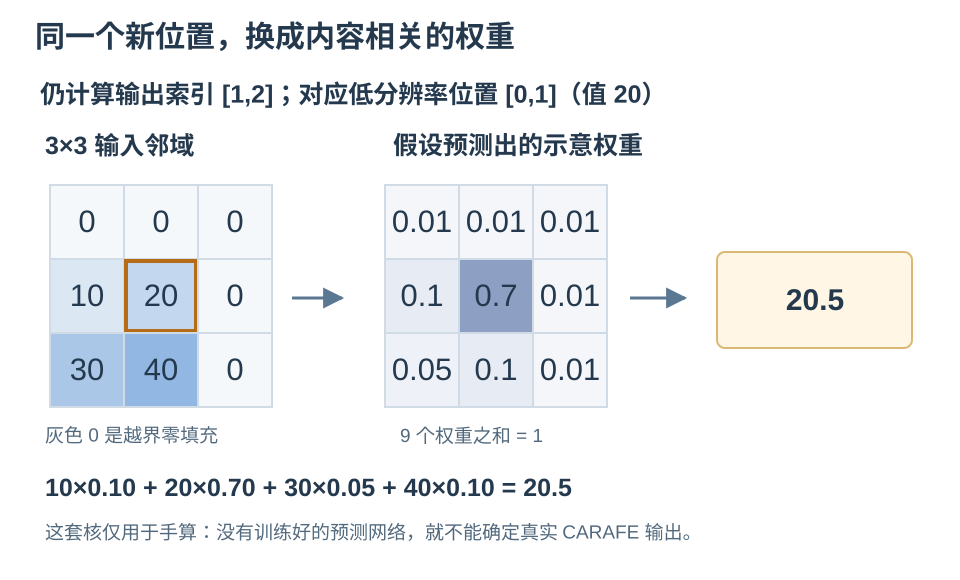
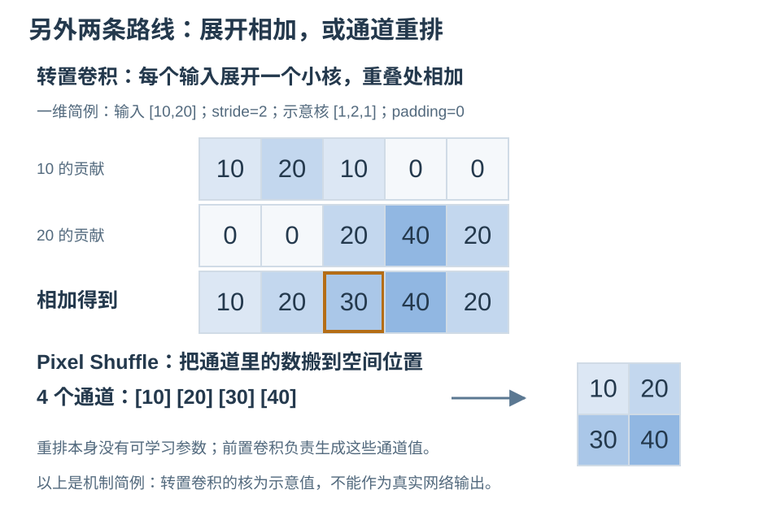

上采样图解：最近邻、双线性与 CARAFE
同一张 2×2 特征图，逐格看懂新值怎样产生
1. 最近邻：把附近的值复制过来
把单通道特征 10、20 / 30、40 放大两倍。最近邻不做平均；在这个整数倍例子里，每个原值直接重复到一个 2×2 区域。一般尺寸变化时，则按坐标映射选择最近的样本。

特点：简单、保留原有数值，但放大图像容易出现块状边缘。缩放离散类别标签或实例 ID 图时，通常用最近邻，避免把不同 ID 平均成新编号。[1]
2. 双线性：先确定新位置，再按距离混合
图像不是把 22.5“塞进原矩阵”。程序先建立新的 4×4 输出网格，再逐格计算它的值。本例采用 align_corners=False：输出列 j 对应输入坐标 x=(j+0.5)/2−0.5，纵向同理；索引从 0 开始。[1]

只看输出第 2 行、第 3 列，即索引 [1,2]：它映射到输入 (x,y)=(0.75,0.25)。横向距左边 0.75、距右边 0.25，所以左权重 0.25、右权重 0.75；纵向则是上 0.75、下 0.25。

为什么换一个设置，4×4 的数字就变了？
align_corners=True 时，输入、输出角点的像素中心对齐：本例横向坐标变为 0、1/3、2/3、1。两种约定都可用，但得到的数值不同。复现实验应同时注明输出尺寸、模式、对齐设置和边界处理。最近邻的具体取整规则在不同实现之间也可能有差别；本例整数倍放大不受该区别影响。
3. CARAFE：根据内容预测权重，再重组原特征
CARAFE = Content-Aware ReAssembly of FEatures，由 Jiaqi Wang 等发表于 ICCV 2019。它不只看“距离多远”，还用一个小网络读取附近的特征，预测每个新位置该怎样混合邻域。[2]

“根据内容预测”具体是什么？内容编码卷积把局部特征乘以训练得到的参数、求和并加偏置，输出一组分数，再经 softmax 变成权重。固定的是预测网络的参数；输入内容变了，输出权重可以跟着变。它也不等于“哪个像素值大，就自动给谁更高权重”。
放大两倍时，一个原位置对应 4 个新位置。本例每个新位置需要 9 个权重，因此编码器在每个原位置输出 4×9=36 个分数；重排后，每个新位置的 9 项独立归一化，不是把全部 36 项放在一起归一化。图中只展示一个通道，实际预测可读取多通道特征。[2]

4. 其他常用上采样：还有哪些路线？
双三次插值（Bicubic）用邻近 4×4 个样本做三次核加权，比双线性使用的邻域更大；权重仍由坐标与预设核决定。它可能更平滑，也可能过冲，不能把“更平滑”直接等同于“分割更准确”。Keys 的 1981 年论文是经典参考，不是把所有三次插值都归为该文首次提出。[3]

转置卷积使用可学习卷积核展开输入、在重叠处相加；训练后通常仍在不同图像和位置共享同一套核。它不是普通卷积的真实逆运算。Pixel Shuffle则把通道数换成空间分辨率，重排本身没有参数，前面的卷积负责生成通道值；代表工作是 Shi 等的 ESPCN（CVPR 2016）。这两类属于上采样，但不等同于传统插值。[4]
5. 对照着记：谁决定新值？
| 方法 | 新值如何产生 | 权重 / 参数来源 | 出处或代表资料 |
|---|---|---|---|
| 最近邻 | 选一个邻近值 | 坐标映射，无训练参数 | 传统插值；OpenCV 文档 |
| 双线性 | 四邻点加权 | 几何距离；每位置可不同 | 传统插值；PyTorch 文档 |
| 双三次 | 通常 4×4 邻域加权 | 坐标与预设三次核 | Keys, 1981 |
| 转置卷积 | 卷积核展开、重叠相加 | 训练得到，通常全图共享 | FCN, CVPR 2015：代表应用，非起源声明 |
| Pixel Shuffle | 通道 → 空间重排 | 重排无参数；前置卷积可学习 | ESPCN, CVPR 2016 |
| CARAFE | 预测空间核，再加权重组 | 预测网络可学习；核随内容变化 | CARAFE, ICCV 2019 |
最近邻、双线性是传统数值方法，不是出自某篇深度学习论文。上表将“方法原始论文”“经典参考”和“代表应用”分开标明，避免把使用过某种算子的网络当作算子发明者。
最近邻：取一个值。
双线性：按距离混合四个值。
CARAFE：先让网络预测怎么混合，再对原邻域加权求和。
一句话总结：上采样先建立更密的输出网格，再决定每格的值。几何插值按位置算，学习式方法靠训练；CARAFE 进一步让混合权重随当前内容变化。放大空间尺寸，不保证恢复所有已经丢失的细节。
最短复现：最近邻与双线性的完整 4×4 数值
import torch
import torch.nn.functional as F
x = torch.tensor([[[[10., 20.], [30., 40.]]]])
print(F.interpolate(x, size=(4, 4), mode="nearest")[0, 0])
print(F.interpolate(x, size=(4, 4), mode="bilinear",
align_corners=False)[0, 0])SVG 数值由本站脚本计算并校验；这段代码给出对应的 PyTorch 复现方式。CARAFE 还需要训练好的预测网络，不能只给输入就确定输出。
论文全文、实现与图源
- 插值定义与坐标约定：PyTorch interpolate、OpenCV Geometric Image Transformations。正文数值固定采用 2×2→4×4、双线性半像素约定与边界值延拓。
- Jiaqi Wang, Kai Chen, Rui Xu, Ziwei Liu, Chen Change Loy, Dahua Lin. CARAFE: Content-Aware ReAssembly of FEatures. ICCV 2019，正式发表。正式全文 · arXiv · 作者官方 CUDA 实现 · MMCV CARAFEPack。机制参照第 3 节。
- R. G. Keys. Cubic Convolution Interpolation for Digital Image Processing. IEEE Transactions on Acoustics, Speech, and Signal Processing, 29(6):1153–1160, 1981。DOI。
- 学习式上采样：PyTorch ConvTranspose2d；Long et al., Fully Convolutional Networks for Semantic Segmentation, CVPR 2015；Shi et al., Real-Time Single Image and Video Super-Resolution Using an Efficient Sub-Pixel Convolutional Neural Network, CVPR 2016；PixelShuffle 文档。
- 六张数值图均为本站原创，未复制论文图形。CARAFE 核与转置卷积核是教学示例，不是论文实验或模型输出。逐图来源记录 · 演算数值。核验日期：2026-11-10。